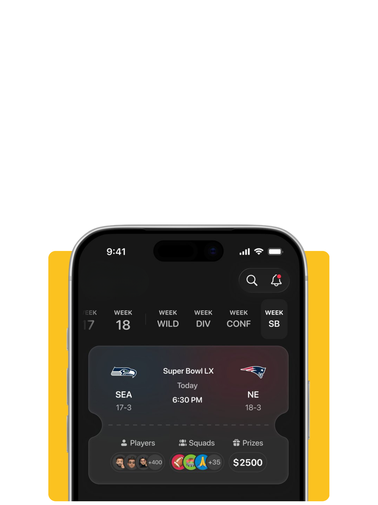
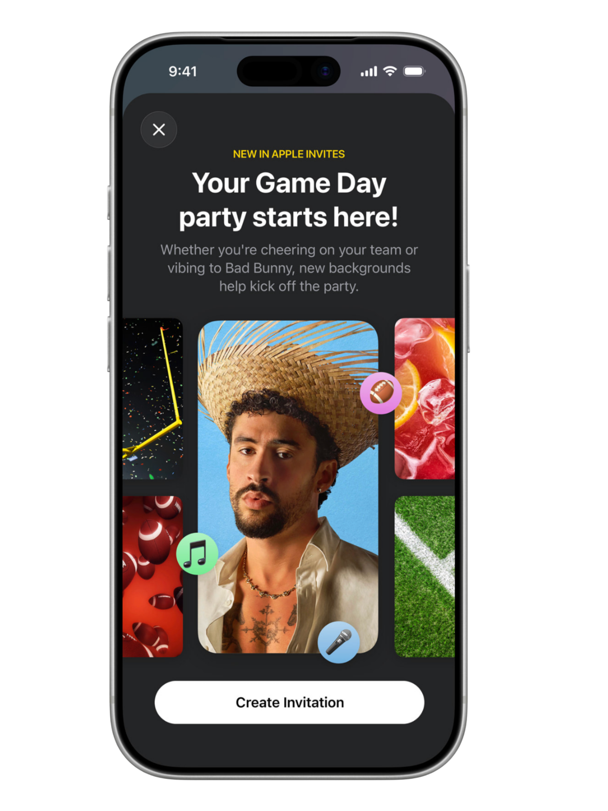
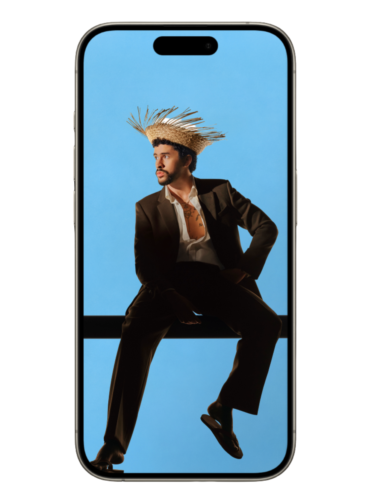
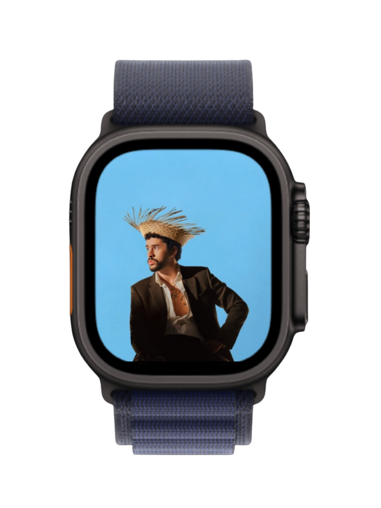
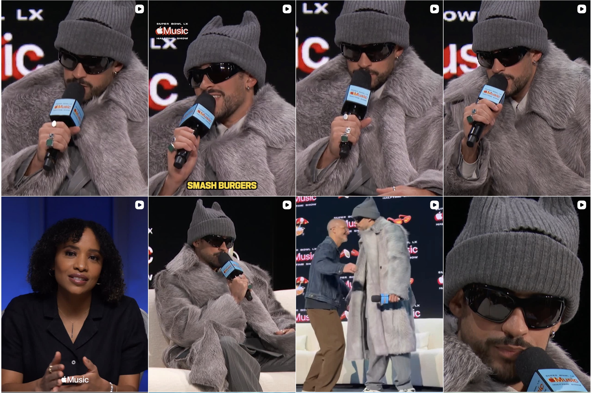

Sponsor: Lay's
U.S. TV Audience: 133.4 million
Considered the first major global pop spectacle.
DCDA Semester Project
A case study on The Apple Music Super Bowl LX Halftime Show by: Abby Hanlon
Overview
The Super Bowl Halftime Show has evolved far beyond a break in gameplay — it has become one of the most strategically marketed and globally consumed cultural moments in entertainment.
What was once considered a mid-game intermission is now a centerpiece of the Super Bowl experience, driven by partnerships with globally recognized brands and some of the biggest artists in the world. Since the 1990s, the halftime show has transformed into a high-stakes platform where music, media, and marketing intersect at scale.
Today, its impact extends far beyond the stadium and television broadcast. Through digital platforms, social media, and streaming ecosystems, the halftime show reaches global audiences in real time — shaping how culture is experienced, shared, and remembered.
A brief look at how the Super Bowl Halftime Show evolved from a televised performance into a global marketing platform.
Sponsor: Lay's
U.S. TV Audience: 133.4 million
Considered the first major global pop spectacle.
Sponsor: E*Trade
U.S. TV Audience: 82.9 million
Notable for its emotional 9/11 tribute.
Sponsor: Bridgestone
U.S. TV Audience: 114 million
Marked a major rise in sponsorship value and event visibility.
Sponsor: Pepsi
U.S. TV Audience: 118.5 million
One of the highest U.S. TV audiences of the pre-streaming era.
Sponsor: Pepsi
U.S. TV Audience: 117.5 million
Helped signal the show’s growing digital and social media influence.
Sponsor: Apple Music
Audience: 121 million
Massive viral impact and major search interest around Fenty Beauty.
Sponsor: Apple Music
International TV Reach: 62.5 million
Reached peak international audiences in Mexico and Canada.
Sponsor: Apple Music
U.S. Live Viewers: 133.5 million
Global Views: 3.65 billion
Most-watched live halftime show in history, with major global digital reach.
Sponsor: Apple Music
U.S. Audience: 128 million
Global Views: 4.157 billion in first 24 hours
Peak global integration, with 55%+ of views from outside the U.S.
The sponsorship shift
Hypothesis
Three mini case studies that show how Apple’s brand identity evolved through media, storytelling, and music.
Section 01
For 50 years, Apple has been universally recognized as “the greatest product company in history” and continues to evolve alongside its audiences and technology.

Section 02
Apple turns product capability into culture — showcasing real-world creativity through its users.

Section 03
Apple expands its ecosystem through music — creating deeper emotional and cultural connections.
Pre-Show Rollout
Through teaser content, platform integration, curated playlists, and digital activations, Apple Music turned halftime into a shared cultural experience long before kickoff.
The Road To Halftime
Apple Music Halftime Rollout
Apple Music expanded Bad Bunny’s halftime show into a digital experience audiences could enter from anywhere — anchored by its “Road to Halftime” campaign.
Playlist Strategy
Apple Music translated Bad Bunny’s sound into mood, genre, and identity, creating multiple cultural entry points that felt personal, yet universally understood.
Sad Bunny. Trap Bunny. Dance Bunny. Party Bunny. Each playlist met listeners in a different emotional state, allowing audiences from all backgrounds to connect with his music in a way that felt familiar and accessible.
Playlist Strategy
The 2026 Super Bowl LX Megamix (DJ Mix), curated and produced by Tainy, traced the full arc of Bad Bunny’s evolution — blending iconic hits with deeper cuts into one seamless narrative.
But the strategy didn’t stop at listening. It expanded into discovery.
Bunny & Friends introduced Bad Bunny through collaboration, showcasing his range across genres and alongside other artists — widening reach while reinforcing his cultural presence.
At the same time, The DNA of DtMF went deeper. By curating the Latin and Puerto Rican sounds that shaped his 2025 album, Apple Music didn’t just promote the project — it educated a global audience on the cultural roots behind it.
Together, these playlists transformed pre-show promotion into something more: a layered experience of discovery, context, and cultural understanding.
Apple Product Integration
Apple leveraged its products and digital platforms to extend the halftime show beyond a single performance, turning it into a connected, multi-touchpoint experience.
On Super Bowl Sunday, Apple Stores became part of the campaign, hosting Today at Apple Spatial Audio listening sessions for CAFé CON RON. These in-store experiences gave fans a physical entry point into the campaign while offering Apple Music trials — blending retail, content, and promotion.
Taken via TikTok by @erikaaa.nyc
Apple Sports allowed users to check live scores, updates, and game-day coverage in real time, seamlessly integrating the Super Bowl into Apple's existing product ecosystem.

At the same time, Apple Maps introduced the curated "Let's Eat" guide in San Francisco, connecting the event to location-based discovery and encouraging users to engage with the city surrounding the game.
Apple Maps Curated Guide
Discover the best dining spots near the Super Bowl LX venue, handpicked to complement the halftime show experience.
Explore on Apple Maps →Together, these integrations expanded the halftime show into an experience that lived both digitally and physically.
Apple Product Integration
Apple also used its platforms to transform passive viewers into active participants through personalized and interactive features.
Apple Invites enhanced watch parties with customizable Bad Bunny–themed invitations, collaborative playlists, shared photo albums, and a live countdown widget — turning social gatherings into extensions of the campaign.

Through Shazam, users could unlock exclusive halftime content by identifying Bad Bunny's music, gaining access to custom wallpapers, bonus assets, and real-time updates. This turned listening into an interactive discovery moment tied directly to the performance.


By integrating these tools, Apple didn’t just promote the halftime show — it created a system where users could engage, personalize, and participate in the experience across multiple platforms.
Social Media Rollout
Apple executed a phased content strategy that turned anticipation into sustained momentum.
September 28, 2025: Apple introduced Bad Bunny as the headliner across YouTube, Instagram, and TikTok, planting the first seed of cultural conversation.
Taken via TikTok by @AppleMusic
Social Media Rollout
Social Media Rollout
February 5 - 8: Apple used exclusive interviews and day-of-show content to create urgency and unify fans across platforms.

Apple Music Halftime Rollout
Intro and Outro created by BUCK Design
Total views in 24 hours across broadcast, YouTube, and social platforms.
One of the largest global entertainment moments in Super Bowl history.
Total social impressions generated around the halftime performance.
Video views connected to Bad Bunny and the halftime show.
Posts related to Bad Bunny across social platforms.
Year-over-year increase in conversation during halftime.
Spike in Bad Bunny listens immediately after the show.
Increase in plays across Super Bowl weekend compared with the January average.
Surge in streams for “DtMF” following the halftime performance.
The halftime setlist became the most-played setlist on Apple Music within hours.
Average TV viewers during halftime, showing that broadcast still matters alongside streaming.
YouTube views within 16 hours of upload, highlighting immediate on-demand consumption.
Total social views from audiences outside the U.S.
Viewers on Telemundo, signaling language diversification and multicultural reach.
Bad Bunny songs in the Apple Music Global Top 100.
Songs in the Apple Music Global Top 25.
Songs in the Apple Music Global Top 10.
“DtMF” reached number one globally.
Campaign Strategy
A global campaign that turned everyday users into creators — and their content into the advertisement itself.
By centering artist-first storytelling and grounding the campaign in Shot on iPhone, Apple captured the moment with authenticity while allowing Bad Bunny to remain the cultural lead. Rather than over-explaining the narrative, Apple trusted audiences to interpret and engage with the moment organically — reinforcing credibility and emotional connection at scale.
At the same time, Apple extended the experience through its broader ecosystem. Apple Music transformed the performance into ongoing engagement through streaming, playlists, and discovery, while the iPhone demonstrated real-world creative capability. Together, these elements connected storytelling, digital integration, and platform behavior into one cohesive experience.
The result is a campaign that moves beyond promotion — blending culture, technology, and global participation into a single unified moment that audiences could watch, share, stream, and feel part of.
Apple Music transformed the performance into ongoing engagement through streaming, playlists, and discovery, while the iPhone demonstrated real-world creative capability.
Together, these elements connected storytelling, digital integration, and platform behavior into one cohesive experience — blending culture, technology, and global participation into a moment audiences could watch, share, stream, and feel part of.
At the same time, Apple extended the experience through its broader ecosystem. Apple Music transformed the performance into ongoing engagement through streaming, playlists, and discovery, while the iPhone demonstrated real-world creative capability.
Together, these elements connected storytelling, digital integration, and platform behavior into one cohesive experience.
The result is a campaign that moves beyond promotion — blending culture, technology, and global participation into a single unified moment that audiences could watch, share, stream, and feel part of.
Conclusion
By connecting Apple Music, Shot on iPhone, product integrations, social storytelling, and global fan participation, Apple created a campaign that felt less like advertising and more like a shared cultural moment.
Bad Bunny stayed at the center, allowing Apple to amplify the artist, the audience, and the cultural meaning behind the performance.
Shot on iPhone and Apple’s ecosystem turned the halftime show into something audiences could watch, replay, share, and participate in.
Apple built a global campaign where music, identity, creativity, and community all worked together under one clear narrative.
This research was conducted through a combination of secondary sources, including industry reports, brand publications, press releases, social media content, and platform analytics related to the Apple Music Super Bowl LX Halftime Show. Key insights were gathered from Apple’s official communications, media coverage, and publicly available performance metrics to analyze the campaign’s global reach, marketing strategy, and cultural impact.
In addition, generative AI tools including ChatGPT, Microsoft Copilot, and Claude were used as supportive resources throughout the development of this project. These tools helped translate conceptual ideas into working design through “vibe coding,” bringing interactive elements and storytelling components to the website. Prompting these chats both on their own websites and in the VS Code app themselves allowed me to communicate my goals and recieve real-time feedback, where I was able to follow up and ask questions in response too. They were also used to ask clarifying questions related to UI/UX design vocabulary and to generate step-by-step guidance for implementing advanced web features such as scroll-triggered animations, sticky sections, and interactive content layouts.
Without these tools, I would not have discovered a passion for user experience. Learning the terminology and building visually engaging, interactive elements sparked an interest that I hope to continue refining in the future. All AI-generated outputs were consistently reviewed, refined, and adapted to align with the project’s creative direction and research goals.
References
A full list of sources used throughout this case study, including research, media, and platform integrations.
View Works Cited